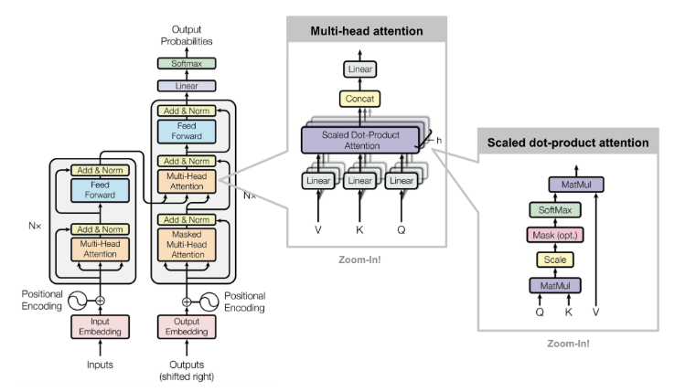
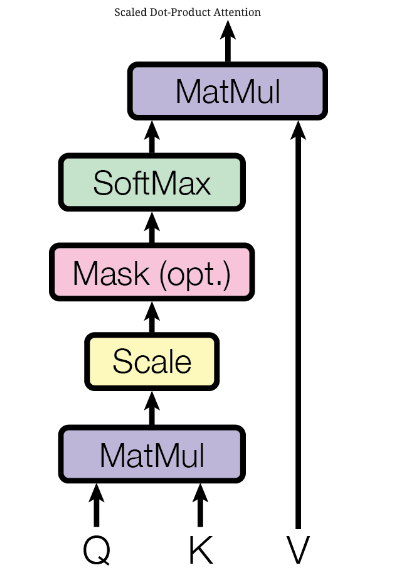
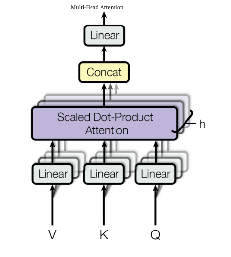
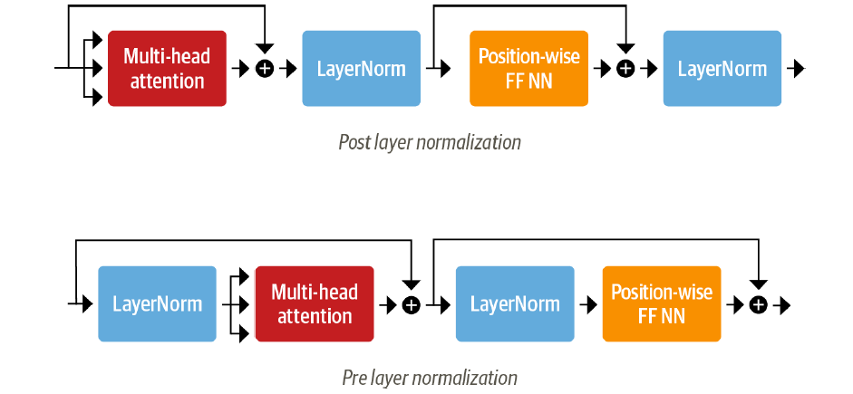
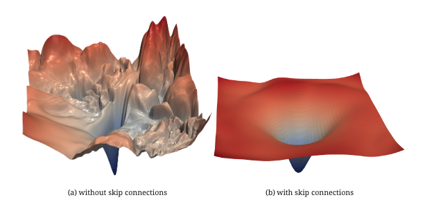
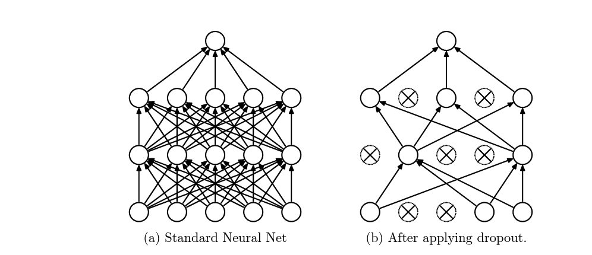

Code
import torch.nn as nn
import torch.nn.functional as F
import torchImad Dabbura
February 14, 2023
February 14, 2023

Transformer architecture was first introduced in Attention Is All You Need paper in 2017. It outperformed RNN-based models on all NLP related tasks. It has an encoder-decoder architecture that is used in tasks such as Neural Machine Translation. The most common examples of models that use transformer architecture is BERT, which uses encoder-only architecture, and GPT, that uses decoder-only architecture.
The main motivation behind creating the Transformer architecture is to overcome issues that RNN-based models have:
In this post, we will implement and explain the main building blocks of the transformer architecture (see figure 1). By the end of this post, we should be able to:
After the input sequence is tokenized and numericalized, we need to project each token into lower dimension space. Such projection is called embedding and it captures the semantic representation of tokens based on the context the token mostly occurs in.
Attention operation is a permutation equivariant, this means that if we permute the input then the corresponding output will be permuted in exactly the same way. In other words, attention mechanism is not aware of the relative ordering of the tokens. Therefore, we need some way to encode the positions of the tokens in each sequence. This is where positional encoding comes into play. There are two types of encodings:
class Embeddings(nn.Module):
def __init__(self, config):
super().__init__()
self.token_embedding = nn.Embedding(config.vocab_sz, config.embed_dim)
self.position_embedding = nn.Embedding(
config.block_sz, config.embed_dim
)
self.layer_norm = nn.LayerNorm(
config.embed_dim, eps=config.layer_norm_eps
)
self.dropout = nn.Dropout(p=0.1)
def forward(self, x):
# X: B x T
# token_embeddings: B x T x embed_dim
# position_embeddings: T x embed_dim
embeddings = self.token_embedding(x) + self.position_embedding(
torch.arange(x.shape[1])
)
embeddings = self.layer_norm(embeddings)
return self.dropout(embeddings)Attention is a communication mechanism that is used by NN model to learn to make predictions by attending to some tokens in the context window (only current and previous tokens for decoder-only architectute). The attention weights, which are learned, are used to construct the weighted average of all the tokens attended to by each token. This will help each token focus on what is important in the context. As a reminder, with attention, there is no notion of space. This means it operates on a set of vectors. This is why we need positional encoding for tokens.
The results of the attention layer would be contextualized embeddings, since the output of the embedding layer is contextless embeddings. This is very useful because we know that the meaning of a word changes according to the context, and embeddings from the embedding layer for a token is the same regardless of its context. For example, the word “bear” has the same embedding vector whether it comes in “teddy bear” or “to bear”.
Self-attention is a type of attention mechanism where the keys and values come from the same source as the queries, which is the input \(x\). Whereas in cross-attention, the queries still get produced from the input \(x\), but the keys and values come from some other external source (encoder module in the case of encoder-decoder architecture).

For self-attention, we have:
Then,
In equations: \[attn(Q,K,V) = softmax(\frac{QK^T}{\sqrt d_k})V\]
class AttentionHead(nn.Module):
def __init__(self, config, head_dim, is_decoder=False) -> None:
super().__init__()
self.k = nn.Linear(config.embed_dim, head_dim, bias=False)
self.q = nn.Linear(config.embed_dim, head_dim, bias=False)
self.v = nn.Linear(config.embed_dim, head_dim, bias=False)
self.is_decoder = is_decoder
if self.is_decoder:
self.register_buffer(
"mask", torch.tril(torch.ones(config.block_sz, config.block_sz))
)
def forward(self, query, key, value):
# query, key, value are each B x T x embed_dim
q = self.q(query)
k = self.k(key)
v = self.v(value)
# w is B x T x T
w = q @ k.transpose(2, 1) / (k.shape[-1] ** 0.5)
if self.is_decoder:
w = w.masked_fill(self.mask == 0, -float("inf"))
w = F.softmax(w, dim=-1)
# output is B x T x head_dim
return w @ vWhat we described in the previous section was self-attention mechanism with one-head. Since each attention head focuses on one specific characteristic of the data in terms of similarity such as subject-verb interaction, other heads are needed to focus on other aspects such as adjectives. We can also think of having multiple heads as if each head focuses on one or few other tokens. Remember that all of this is done in parallel and there is no communication between heads. This means that each head has no idea what other heads are doing.

In multi-head layer, we typically have the head_sz be the result of dividing the hidden_sz (or the embeddind_dim if it is the first layer) by the number of heads.
Once we get all contextualized embeddings from all heads, we concatenate them. Then we pass the output through a projection layer with the same dimension as the input.
class MultiHeadAttention(nn.Module):
def __init__(self, config, is_decoder=False) -> None:
super().__init__()
head_dim = config.embed_dim // config.num_attention_heads
self.heads = nn.ModuleList(
[
AttentionHead(head_dim, config, is_decoder)
for _ in range(config.num_attention_heads)
]
)
self.output = nn.Linear(config.embed_dim, config.embed_dim)
def forward(self, x):
x = torch.cat([head(x) for head in self.heads], dim=-1)
return self.output(x)Because there are no elementwise nonlinearities involved in the calculation of the attention, stacking multiple layers of attention wouldn’t help much because the output would still be linear transformation of the input. As a result, feed-forward NN is added to add such nonlinearities to post-process each output vector from the attention layer. Therefore, each embedding vector is processed independently in the batched sequence, which leads to the position-wise feed-forward layer.
We typically first project the output vector into new space 4x the hidden_sz. Therefore, most of the capacity and memorization is expected to happen in the first layer, which is what gets scaled when the model is scaled up. Then we project it back to the original dimension. We use GELU as the activation function, which is a Gaussian Error Linear Units.
class FeedForwardNN(nn.Module):
def __init__(self, config):
super().__init__()
# intermediate_sz is typically 4 x embed_dim
self.l1 = nn.Linear(config.embed_dim, config.intermediate_sz)
self.l2 = nn.Linear(config.intermediate_sz, config.embed_dim)
self.dropout = nn.Dropout(config.hidden_dropout_prob)
def forward(self, x):
return self.dropout(self.l2(F.gelu(self.l1(x))))Layer normalization was introduced in this paper to overcome the main challenges of Batch normalization, which are 1) how do we handles batches with 1 or few examples because we would have infinite variance or unstable training and 2) how do we handle RNNs. The main differences with batch normalization are 1) we don’t have moving averages/standard deviations and 2) we average over the hidden dimesnion(s), so it is indepenedent of the batch size. It has two learnable parameters (scalars): \(\beta\) and \(\gamma\) (see the equation below):
\[y = \frac{x - \mathrm{E}[x]}{ \sqrt{\mathrm{Var}[x] + \epsilon}} * \gamma + \beta\]
It is used as a trick to train complex models, such as Transformer, faster. In our case, we would normalize the hidden vectors to zero mean and unit standard deviation. This trick helps maintain consistent distribution of signals by cutting down uninformative variations in hidden vector values.
There are two arrangements for the layer normalization as illustrated in Figure-4:

Skip connections help train deeper and more complex models faster as well as avoid the issue of vanishing gradients that deeper networks face. It provides paths for the gradient to flow through back to the input. In our case, we are using skip connections with addition, which means we take a copy of the inputs and added it to the output of a block (involves some computations). If we assume \(y = x + F(x)\), then it is as if we are asking the block to predict \(y - x\). In other words, it means to backpropagate through the identity function, which leads to multiply the gradient of \(y\) by one and retain its value in the earlier layers.
Skip connections help also smooth out the loss landscape (see Figure-5), and make it easier for the gradients to flow back as addition operator split the gradients equally. This means that small changes in the input can still find their way to the output. Additionally, it preserves the original input sequence, which means there is no way for the current word to forget to attend to its position because we always add it back.


Dropout is a regularization technique that was introduced by Geoffrey Hinton et al. in this paper. On each iteration, we randomly shut down some outputs from the previous layer and don’t use those outputs in both forward propagation and back-propagation. Since the outputs that will be dropped out on each iteration will be random, the learning algorithm will have no idea which neurons will be shut down on every iteration; therefore, force the learning algorithm to spread out the weights and not focus on some specific feattures. Moreover, dropout help improving generalization error by:
Dropout is used in the Transformer in embeddings layer after adding the token and positional embeddings as well as after each multi-head/feed-forward layers in both the encoder and decoder layers.
For more information on dropout, check out my previous post.
Encoder-only architecture are well suited for classification tasks. The most common model that uses encoder-only branch of the Transformer architecture is BERT and all its variants such as RoBERTa. In this architecture, we would have:
B x T x hidden_sz.[CLS] in the case of BERT (indicates the beginning of sequence), and pass it through the linear layer to get the logits.class EncoderLayer(nn.Module):
def __init__(self, config):
super().__init__()
self.attn = MultiHeadAttention(config)
self.layer_norm_1 = nn.LayerNorm(config.embed_dim)
self.layer_norm_2 = nn.LayerNorm(config.embed_dim)
self.ff = FeedForwardNN(config)
def forward(self, x):
# There are two arrangements for layer_norm:
# Prelayer normalization & Postlayer normalization
# we are using postlayer normalization arrangement
x = self.layer_norm_1(x + self.attn(x))
x = self.layer_norm_2(x + self.ff(x))
# Prelayer normalization
# x = self.layer_norm_1(x)
# x = x + self.attn(x)
# x = x + self.ff(self.layer_norm_2(x))
return xclass TransformerEncoder(nn.Module):
def __init__(self, config) -> None:
super().__init__()
self.embeddings = Embeddings(config)
self.encoder_blocks = nn.Sequential(
*[EncoderLayer(config) for _ in range(config.num_hidden_layers)]
)
def forward(self, x):
x = self.embeddings(x)
return self.encoder_blocks(x)class TransformerForSequenceClassification(nn.Module):
def __init__(self, config):
super().__init__()
self.encoder = TransformerEncoder(config)
self.dropout = nn.Dropout(config.hidden_dropout_prob)
self.classifier = nn.Linear(config.embed_dim, config.num_classes)
def forward(self, x):
# We take the hidden state of the [CLS] token as
# input to the classifier
x = self.encoder(x)[:, 0, :]
x = self.dropout(x)
return self.classifier(x)These models are typically used as language models such as GPT and all its variants. In this architecture, as opposed to the encoder-only architecture, the token can only see past tokens but not future tokens because this would be a kind of cheating since we are trying to predict the next token. Therefore, we need to mask all future tokens in the attention layer. In this architecture, we would have:
B x T x hidden_sz.softmax to get the probability distribution over all tokens in the vocabulary. The token with the highest probability would be chosen during training.At inference, we can use many sampling algorithms such as the greedy algorithm or top-k algorithm using the probability distribution obtained from the classification head.
class DecoderLayer(nn.Module):
def __init__(self, config):
super().__init__()
self.attn = MultiHeadAttention(config, is_decoder=True)
self.layer_norm_1 = nn.LayerNorm(config.head_dim)
self.layer_norm_2 = nn.LayerNorm(config.head_dim)
self.ff = FeedForwardNN(config)
def forward(self, x):
x = self.layer_norm_1(x + self.attn(x))
x = self.layer_norm_2(x + self.ff(x))
return xclass TransformerDecoder(nn.Module):
def __init__(self, config) -> None:
super().__init__()
self.embeddings = Embeddings(config)
self.decoder_blocks = nn.Sequential(
*[DecoderLayer(config) for _ in range(config.num_hidden_layers)]
)
def forward(self, x):
x = self.embeddings(x)
return self.decoder_blocks(x)class GPT(nn.Module):
def __init__(self, config):
super().__init__()
self.decoder = TransformerDecoder(config)
self.dropout = nn.Dropout(config.hidden_dropout_prob)
self.lm_head = nn.Linear(config.head_dim, config.vacab_sz)
def forward(self, x):
x = self.decoder(x)
x = self.dropout(x)
return self.lm_head(x)The encoder-decoder architecture is the first Transformer architecture used in the Attention Is All You Need paper for Neural Machine Translation Task. It is typically used for tasks that have both their input and output as text such as summarization. T5 and BART are the most common models that use such architecture.
For each decoder layer, we add masked multi-head attention layer in the middle that 1) takes the hidden state from the last encoder layer to compute the keys and values and 2) takes the hidden state from layer norm to compute the query. This means, this additional middle multi-head attention layer attends to the all tokens in the input sequence. This is a kind of cross-attention that we defined earlier where keys and values come from different source (input sequence) while the query comes from other source.
It is very easy to extend or modify our implementation of DecoderLayer to use it in this architecture, so I will leave it for you as an exercise!
In this post we started with a brief introduction of Transformer architecture and the motivation behind it such as overcoming RNN-based models. We then covered the main building blocks of the Transformer architecture including attention mechanism. We then briefly went over few tricks that are helpful to train complex models faster such as skip connections and layer normalization. Along the way, we implemented main sublayers used in the architecure. We concluded with different branches of the Transformer architecture that can be used separately such as encoder-only or decoder-only.
I hope that you found this post helpful and provided and a good background about the Transformer architecture.